Tageskalender – App für Firefox OS / Day calender – app for Firefox OS
Bildschirmfotos / Screenshots
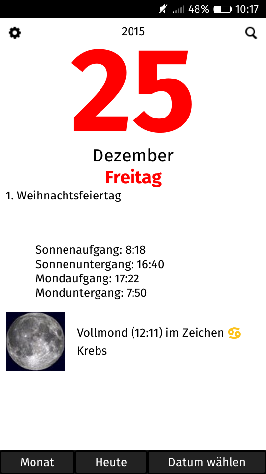
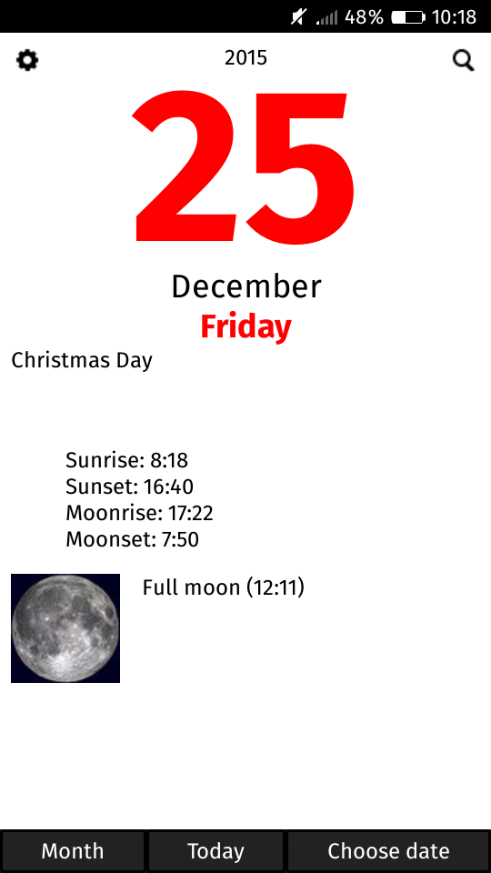
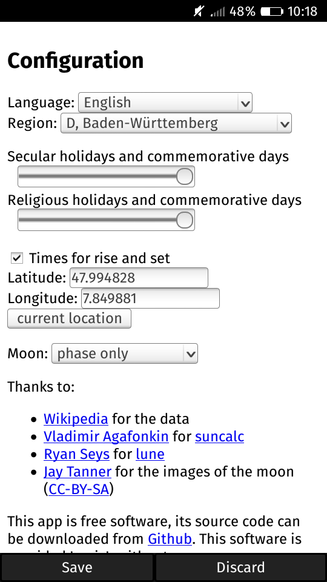
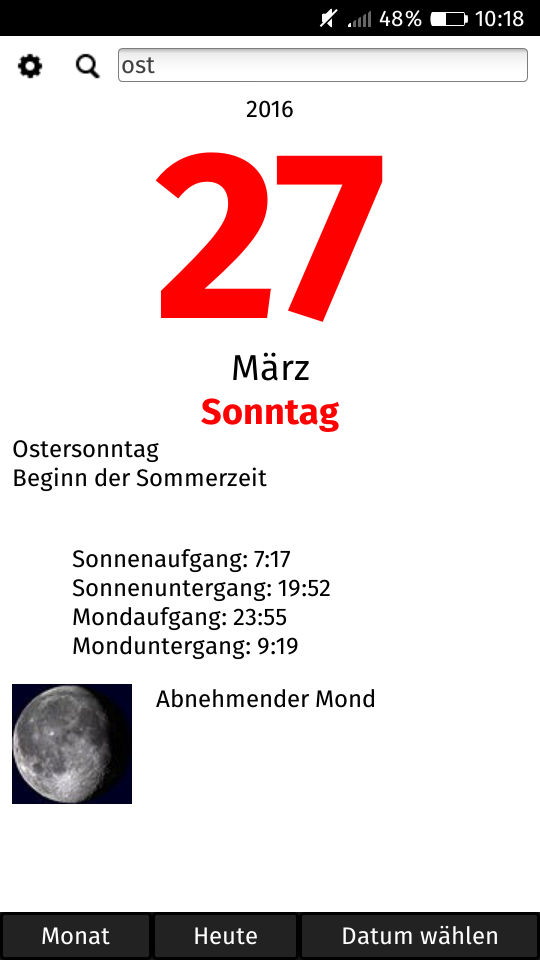
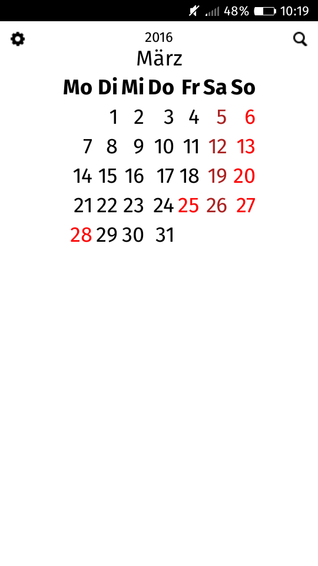
Beschreibung
Dieser Tageskalender liefert für jeden Tag viele zusätzliche Informationen.
Benutzung
Tagesansicht
Blättern durch Wischgesten nach links oder rechts
Direktauswahl des Datums am unteren Bildschirmrand
Monatsübersicht
Blättern durch Wischen nach links oder rechts
Wechsel zur Tagesansicht durch Antippen des gewünschten Datums
Suche
Starten über Lupensymbol am oberen Bildschirmrand
unterscheidet nicht zwischen Groß- und Kleinschreibung
wechselt in Tagesansicht zum nächsten passenden Datum
beim Blättern werden nur passende Daten angezeigt
in Monatsübersicht werden passende Daten hervorgehoben
Konfiguration
Aufruf über Zahnradsymbol am oberen Bildschirmrand
Sprache (inkl. österreichischem und Schweizer Deutsch)
Region (für Anzeige der Feiertage)
Feier- und Gedenktage in mehreren Stufen einstellbar
optional: Ort für Auf- und Untergangszeiten von Sonne und Mond
optional: Mondphase und Tierkreiszeichen, in dem der Mond sich befindet
Einschränkungen
Es gibt keine Verknüpfung mit der Standard-Kalender-App.
Die Daten können (und werden) Fehler und Lücken enthalten. Insbesondere sind bei den religiösen Feier- und Gedenktagen fast ausschließlich nur katholische vorhanden, säkulare Gedenktage sind nur sehr lückenhaft. Falls dir etwas auffällt, was ich ändern soll, dann schick mir eine E-Mail.
Die Verdrängung von christlichen Hochfesten durch höherrangige gemäß dem Direktorium der römisch-katholischen Kirche ist nicht implementiert.
Obwohl Übersetzungen in andere Sprachen prinzipiell möglich sind, gibt es im Augenblick neben den deutschen Texten nur eine nicht vollständige englische Lokalisierung. Falls du mir beim Übersetzen in eine andere Sprache helfen willst, dann erstelle ein GitHub-Ticket.
Obwohl Feiertage für beliebige Staaten (innerhalb der oben genannten Einschränkungen) prinzipiell möglich sind, stehen im Augenblick nur Daten für Deutschland (und in geringerem Umfang für Schweiz, Liechtenstein und Österreich) zur Verfügung. Falls du die App gerne für ein anderes Land verwenden möchtest, dann erstelle ein GitHub-Ticket.
Description
This day calender shows additional information for every day.
Usage
Day view
Browse by swiping left or right
Select date with buttons at the end of the screen
Month view
Browse by swiping left or right
Change to day view by tapping the date
Search
Start with the magnifying glass at the start of the screen
Case insensitive
In day view will show next matching date
While browsing only matching dates are shown
In month view matching dates are highlighted
Configuration
Start with cog symbol at the start of the screen
Language (including English)
Region (for display of holidays)
Holidays and commemorative days configurable in different stages
Optional: location for times for sunrise, sunset, moonrise and moonset
Optional: phase of the moon and sign of zodiac which it is in
Caveats
It cannot be connected with the default calender app.
The data can (and will) contain errors and omissions. Especially the religious holidays and commemorative days are mostly catholic ones, most secular commemorative days are still missing. If you notice something I should change, just write an email to me.
Though translations into other languages are possible, the app currently only has German and an incomplete English translation. If you want to help me to add another translation, just open a GitHub issue.
Though holidays can be shown for any country, currently there are only data for Germany (and to some degree Switzerland, Liechtenstein and Austria). If you want to use this app in another country, just open a GitHub issue.
Installieren / Install
Die Online-Version erlaubt ein schnelles Testen der App in einem beliebigen Browser. Beachte, dass die App aber für Mobilgeräte mit Firefox OS entwickelt wurde, sodass die Online-Version Fehler besitzen kann.
The online version allows to quickly test the app in any browser. Please note that the app was developed for mobile phones with Firefox OS, so the online version might have bugs.
 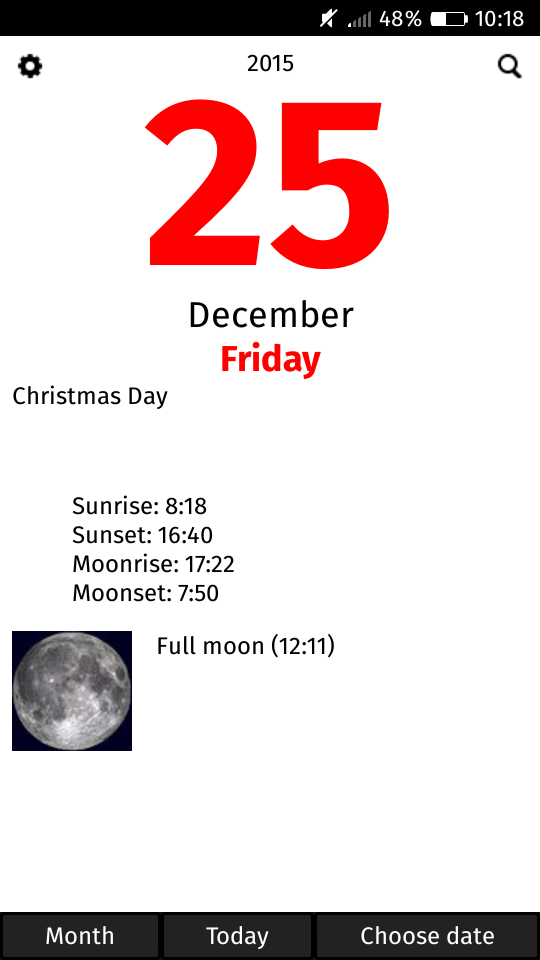
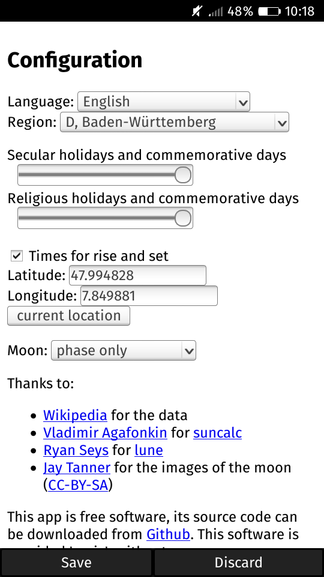
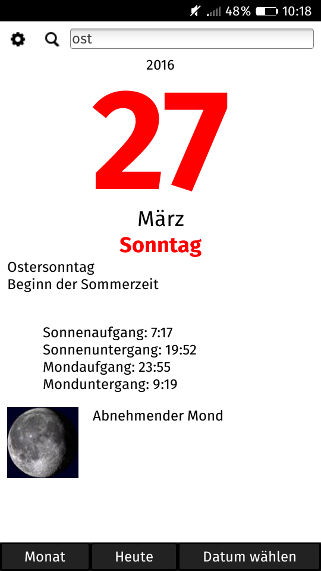
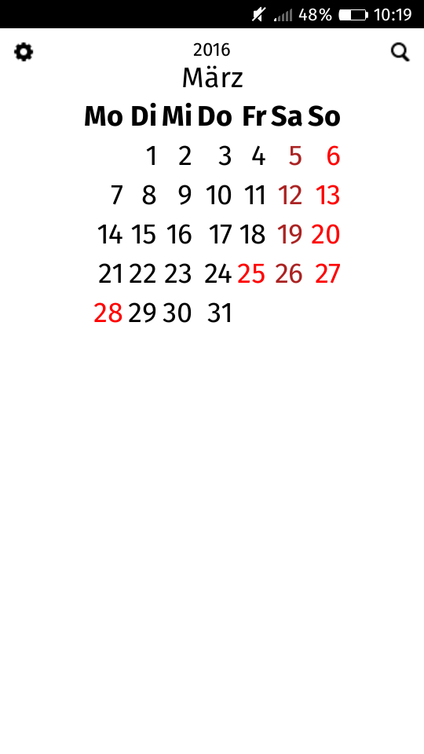
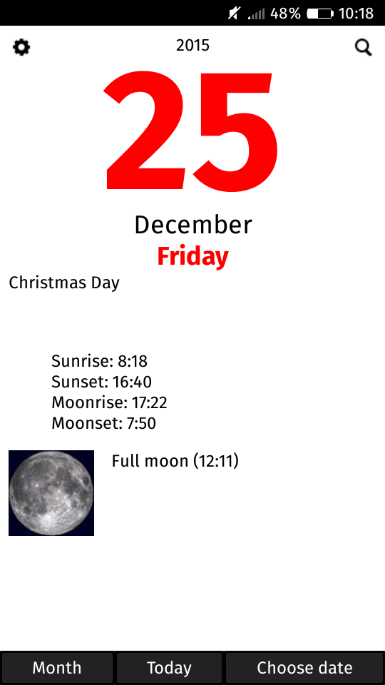
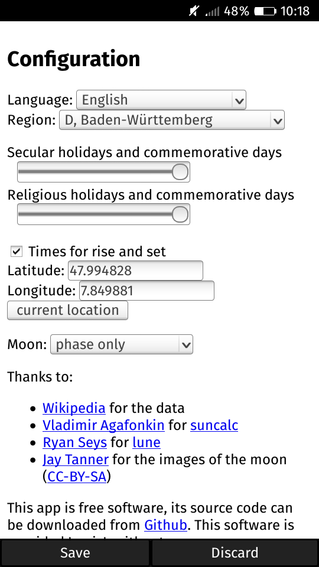
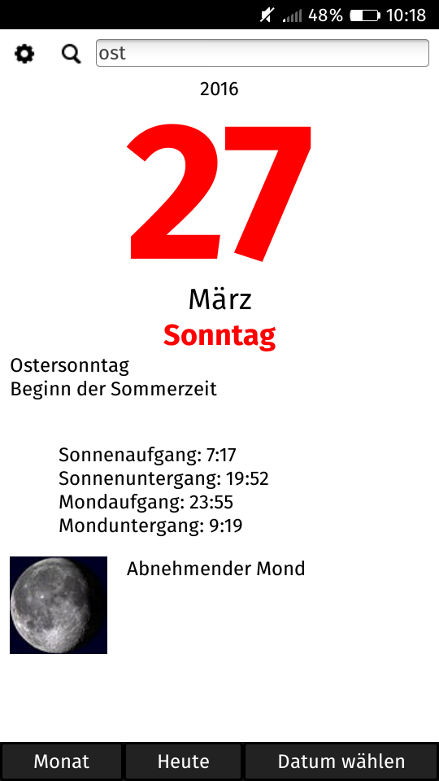
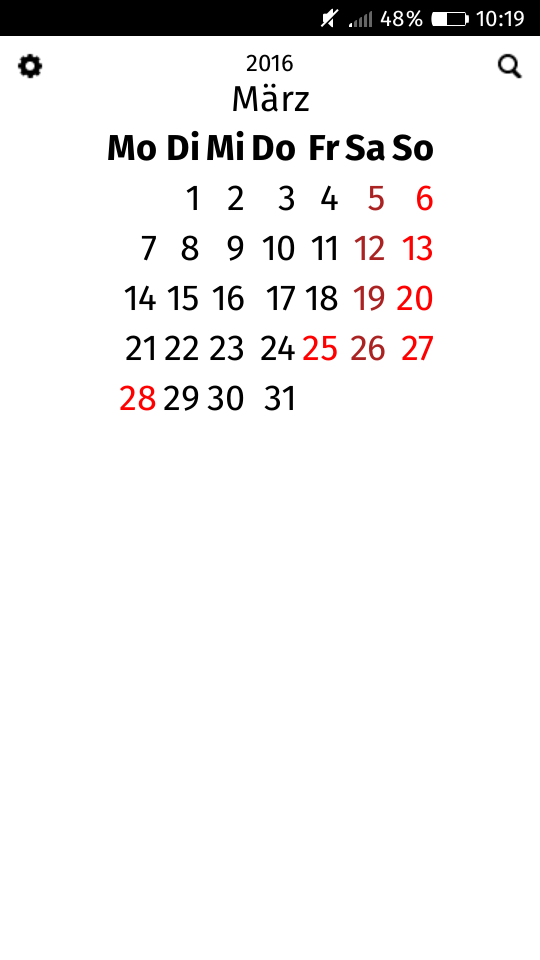